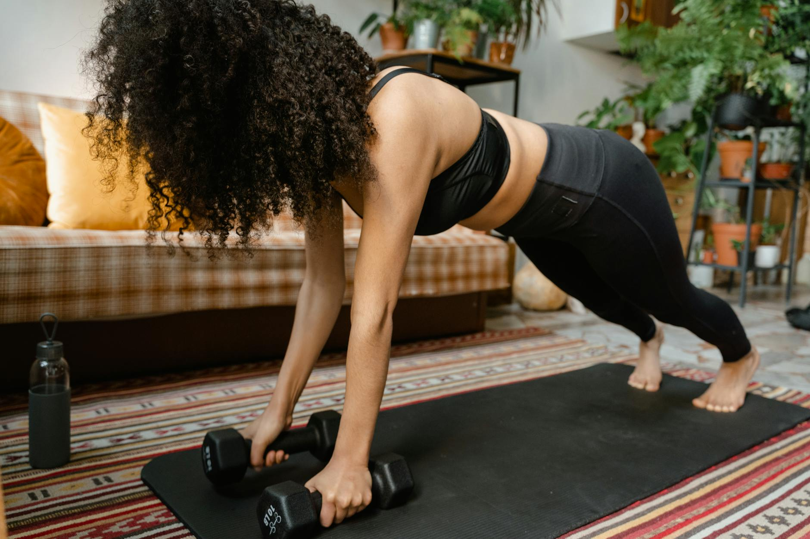

Can You Build Muscle With No Equipment? Yes, Here's How!
Key takeaways
- The short answer is a resounding yes!
- Many people think lifting heavy weights is the only way to build significant muscle, but your body is an incredible machine that can adapt and grow stronger with just its own resistance.
- Focus on: Can You Really Build Muscle Without Weights?.

Can You Really Build Muscle Without Weights?
The short answer is a resounding yes! Many people think lifting heavy weights is the only way to build significant muscle, but your body is an incredible machine that can adapt and grow stronger with just its own resistance. Whether you're short on time, space, or gym budget, you can absolutely sculpt a stronger physique from the comfort of your home. This guide will show you how to create effective no-equipment workout plans that deliver real results.
Building muscle, also known as hypertrophy, happens when you challenge your muscles beyond their usual capacity, causing microscopic tears. As these tears repair, your muscles grow back stronger and larger. The key is progressive overload – consistently increasing the demand on your muscles over time. With bodyweight exercises, this means finding ways to make movements harder or do more of them.
The Power of Bodyweight Training
Bodyweight exercises utilize your own mass as resistance. Think push-ups, squats, lunges, and planks. These aren't just for beginners; advanced athletes use them to build incredible strength and endurance. The beauty of bodyweight training is its accessibility and versatility. You can do it anywhere, anytime, and it engages multiple muscle groups simultaneously, leading to more functional strength.
Finding Your Challenge: Progressive Overload at Home
Since you don't have dumbbells to increase weight, you need to get creative with progressive overload:
- Increase Repetitions: Aim for more reps within each set.
- Increase Sets: Add more sets to your workout.
- Decrease Rest Time: Shorter breaks between sets make the workout more intense.
- Improve Form: Slowing down the movement, especially the eccentric (lowering) phase, increases time under tension.
- Increase Range of Motion: Go deeper in your squats or push further down in your push-ups.
- Change Angles: Elevate your feet for push-ups (decline push-ups) or do single-leg squats (pistol squats) for more challenge.
- Add Tempo: For example, do a 3-second negative on squats and a 1-second pause at the bottom.
A Sample No-Equipment Workout Plan
Here’s a full-body routine you can do 3-4 times a week, with at least one rest day in between. Remember to warm up for 5-10 minutes before starting (e.g., jumping jacks, arm circles, leg swings) and cool down afterward.
Lower Body
- Squats: 3 sets of 10-15 reps. Focus on going as deep as comfortable.
- Lunges: 3 sets of 10-12 reps per leg. Alternate legs or complete one leg before switching.
- Glute Bridges: 3 sets of 15-20 reps. Squeeze your glutes at the top.
Upper Body
- Push-ups: 3 sets to near failure. If standard push-ups are too hard, do them on your knees or against a wall. If too easy, elevate your feet.
- Incline Push-ups: 3 sets of 10-15 reps (hands on a sturdy chair or table).
- Plank: 3 sets, hold for 30-60 seconds. Keep your body in a straight line.
Core
- Crunches: 3 sets of 15-20 reps.
- Leg Raises: 3 sets of 15-20 reps. Keep your lower back pressed into the floor.
Real-Life Example: Sarah's Home Transformation
Sarah, a busy marketing manager, wanted to get stronger but struggled to find time for the gym. She started following a no-equipment routine similar to the one above, focusing on increasing her push-up reps each week and adding an extra set of squats. Within three months, she noticed a significant difference in her strength and muscle definition, all without stepping foot in a gym. She even started incorporating more challenging variations like diamond push-ups and jump squats.
Actionable Checklist for Your Home Workout
Ready to start? Use this checklist:
- Schedule your workouts like appointments.
- Gather any minimal equipment needed (e.g., a sturdy chair, a yoga mat).
- Perform a 5-10 minute warm-up before each session.
- Focus on proper form for each exercise.
- Gradually increase reps, sets, or difficulty over time.
- Include rest days for muscle recovery.
- Stay hydrated and fuel your body with nutritious food.
Common Mistakes to Avoid
While bodyweight training is effective, some common pitfalls can hinder progress:
- Not challenging yourself enough: Doing the same easy routine without trying to progress will lead to plateaus.
- Ignoring proper form: This can lead to injuries and reduces the effectiveness of the exercise.
- Skipping warm-ups and cool-downs: These are crucial for injury prevention and recovery.
- Inconsistent training: Sporadic workouts won't yield the same results as a regular schedule.
- Neglecting nutrition: Muscle growth requires adequate protein and overall healthy eating.
Remember, consistency and progressive overload are your best friends when building muscle at home. Explore different variations of exercises to keep things interesting and challenging. For more ideas on staying active at home, check out our tips for home fitness, learn about boosting your metabolism, discover healthy snack options, understand the importance of quality sleep for recovery, and explore stress management techniques.
Educational only — not medical advice.
Frequently Asked Questions
Can I build noticeable muscle size with just bodyweight exercises?
Yes, you can build noticeable muscle size, especially if you are new to training or haven't trained in a while. For significant hypertrophy, focus on progressive overload and ensuring adequate protein intake.
How often should I do no-equipment workouts?
Aim for 3-4 full-body workouts per week, allowing at least one rest day between sessions for muscle recovery and growth.
What if I can't do a standard push-up?
Start with easier variations like knee push-ups, incline push-ups against a wall or elevated surface, or even just focusing on the lowering (eccentric) phase of the movement.
Is it important to track my progress?
Absolutely! Tracking your reps, sets, and how you feel helps you implement progressive overload and stay motivated by seeing your improvements.
Start Building Muscle Today!
Building muscle without equipment is entirely achievable with the right approach. Focus on challenging your body consistently, fueling it properly, and allowing for adequate rest. You have the power within you to get stronger, fitter, and healthier, right where you are. Get started today!
More in home-workouts

Can You Build Muscle With Just Bodyweight? Yes, Here's How!
Discover how to effectively build muscle using only your bodyweight. Learn practical, no-equipment workout plans and tips for strength train
Read more →
Can You Build Muscle With No Equipment? Yes, Here's How!
Discover how to build muscle at home without any gym equipment. Learn effective bodyweight exercises and workout plans for a stronger you.
Read more →Related posts
Can You Build Muscle With Just Bodyweight? Yes, Here's How!
Discover how to effectively build muscle using only your bodyweight. Learn practical, no-equipment workout plans and tips for strength train
Read more →Can You Build Muscle With No Equipment? Yes, Here's How!
Discover how to build muscle at home without any gym equipment. Learn effective bodyweight exercises and workout plans for a stronger you.
Read more →
Can You Get Fit Without Gym Equipment?
Discover how to achieve your fitness goals with effective home workouts that require no gym equipment. Learn practical tips and movement pla
Read more →